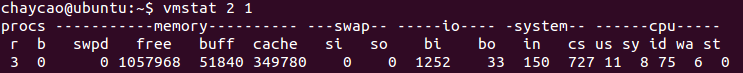

vmstat
展现给定时间间隔的服务器状态值，如CPU使用率、内存使用、虚拟内存交换情况、IO读写情况
参数：
- 采用的时间间隔数，单位秒
- 采样的次数

- r 表示正在跑的任务数，当这个值超过了CPU数目，就会出现CPU瓶颈了。这个也和top的负载有关系，一般负载超过了3就比较高，超过了5就高，超过了10就不正常了，服务器的状态很危险。top的负载类似每秒的运行队列。如果运行队列过大，表示你的CPU很繁忙，一般会造成CPU使用率很高。
- b 表示阻塞的进程。
- swpd 虚拟内存已使用的大小，如果大于0，表示你的机器物理内存不足了，如果不是程序内存泄露的原因，那么你该升级内存了或者把耗内存的任务迁移到其他机器。
- free 空闲的物理内存的大小。
- buff Linux/Unix系统是用来存储，目录里面有什么内容，权限等的缓存
- cache cache直接用来记忆我们打开的文件,给文件做缓冲(这里是Linux/Unix的聪明之处，把空闲的物理内存的一部分拿来做文件和目录的缓存，是为了提高 程序执行的性能，当程序使用内存时，buffer/cached会很快地被使用。)
- si 每秒从磁盘读入虚拟内存的大小，如果这个值大于0，表示物理内存不够用或者内存泄露了，要查找耗内存进程解决掉。
- so 每秒虚拟内存写入磁盘的大小，如果这个值大于0，同上。
- bi 块设备每秒接收的块数量，这里的块设备是指系统上所有的磁盘和其他块设备，默认块大小是1024byte。
- bo 块设备每秒发送的块数量，例如我们读取文件，bo就要大于0。bi和bo一般都要接近0，不然就是IO过于频繁，需要调整。
- in 每秒CPU的中断次数，包括时间中断
- cs 每秒上下文切换次数，例如我们调用系统函数，就要进行上下文切换，线程的切换，也要进程上下文切换，这个值要越小越好，太大了，要考虑调低线程或者进程的数目,例如在apache和nginx这种web服务器中，我们一般做性能测试时会进行几千并发甚至几万并发的测试，选择web服务器的进程可以由进程或者线程的峰值一直下调，压测，直到cs到一个比较小的值，这个进程和线程数就是比较合适的值了。系统调用也是，每次调用系统函数，我们的代码就会进入内核空间，导致上下文切换，这个是很耗资源，也要尽量避免频繁调用系统函数。上下文切换次数过多表示你的CPU大部分浪费在上下文切换，导致CPU干正经事的时间少了，CPU没有充分利用，是不可取的。
- us 用户进程执行时间百分比，值高，说明用户进程消耗的CPU时间多，若长期超过50%，该考虑优化程序算法或进行加速。
- sy 内核系统进程执行时间百分比，如果太高，表示系统调用时间长，例如是IO操作频繁。
- id 空闲 CPU时间，一般来说，id + us + sy = 100,一般我认为id是空闲CPU使用率，us是用户CPU使用率，sy是系统CPU使用率。
- wa 等待IO CPU时间，值高，说明IO等待严重，可能由于磁盘大量做随机访问造成，也有可能磁盘出现瓶颈（块操作）。